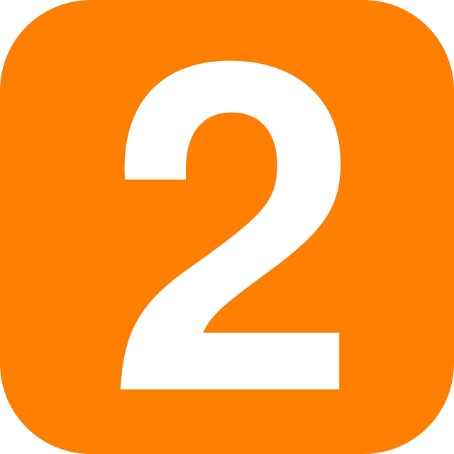

전혜원의 깃허브
▼ 과제 영상 보러가기 ▼

깃허브 용어 간단히 이해하기!
- repository: '저장소'라는 뜻으로, 일종의 작업하는 공간.
- remote repository : 원격 저장소 전용 서버에서 관리되며
- local repository : 개인이 전용으로 사용하는 저장소
- branch: 버전관리를 위해 사용자 또는 수정 단위마다 생성.
- master branch : repository를 만들 때 가장 처음 생성되는 브랜치.
- commit : 파일추가 또는 변경사항이 있을 때 저장소에 기록하는 행위.
소스트리 간단히 이해하기!
- sourcetree: GUI(Graphic User Interface)환경에서 Git을 사용할 수 있게 해주는 프로그램